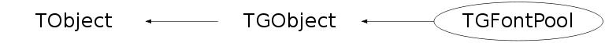

class TGFontPool: public TGObject
TGFont and TGFontPool Encapsulate fonts used in the GUI system. TGFontPool provides a pool of fonts. TGTextLayout is used to keep track of string measurement information when using the text layout facilities. It can be displayed with respect to any origin.
Function Members (Methods)
public:
| TGFontPool(TGClient* client) | |
| virtual | ~TGFontPool() |
| void | TObject::AbstractMethod(const char* method) const |
| virtual void | TObject::AppendPad(Option_t* option = "") |
| virtual void | TObject::Browse(TBrowser* b) |
| static TClass* | Class() |
| virtual const char* | TObject::ClassName() const |
| virtual void | TObject::Clear(Option_t* = "") |
| virtual TObject* | TObject::Clone(const char* newname = "") const |
| virtual Int_t | TObject::Compare(const TObject* obj) const |
| virtual void | TObject::Copy(TObject& object) const |
| virtual void | TObject::Delete(Option_t* option = "")MENU |
| virtual Int_t | TObject::DistancetoPrimitive(Int_t px, Int_t py) |
| virtual void | TObject::Draw(Option_t* option = "") |
| virtual void | TObject::DrawClass() constMENU |
| virtual TObject* | TObject::DrawClone(Option_t* option = "") constMENU |
| virtual void | TObject::Dump() constMENU |
| virtual void | TObject::Error(const char* method, const char* msgfmt) const |
| virtual void | TObject::Execute(const char* method, const char* params, Int_t* error = 0) |
| virtual void | TObject::Execute(TMethod* method, TObjArray* params, Int_t* error = 0) |
| virtual void | TObject::ExecuteEvent(Int_t event, Int_t px, Int_t py) |
| virtual void | TObject::Fatal(const char* method, const char* msgfmt) const |
| TGFont* | FindFont(FontStruct_t font) const |
| TGFont* | FindFontByHandle(FontH_t font) const |
| virtual TObject* | TObject::FindObject(const char* name) const |
| virtual TObject* | TObject::FindObject(const TObject* obj) const |
| void | FreeAttributeInfo(char** info) |
| void | FreeFont(const TGFont* font) |
| void | FreeFontFamilies(char** f) |
| char** | GetAttributeInfo(const FontAttributes_t* fa) |
| TGClient* | TGObject::GetClient() const |
| virtual Option_t* | TObject::GetDrawOption() const |
| static Long_t | TObject::GetDtorOnly() |
| TGFont* | GetFont(const TGFont* font) |
| TGFont* | GetFont(FontStruct_t font) |
| TGFont* | GetFont(const char* font, Bool_t fixedDefault = kTRUE) |
| TGFont* | GetFont(const char* family, Int_t ptsize, Int_t weight, Int_t slant) |
| char** | GetFontFamilies() |
| virtual const char* | TObject::GetIconName() const |
| Handle_t | TGObject::GetId() const |
| virtual const char* | TObject::GetName() const |
| virtual char* | TObject::GetObjectInfo(Int_t px, Int_t py) const |
| static Bool_t | TObject::GetObjectStat() |
| virtual Option_t* | TObject::GetOption() const |
| virtual const char* | TObject::GetTitle() const |
| virtual UInt_t | TObject::GetUniqueID() const |
| virtual Bool_t | TObject::HandleTimer(TTimer* timer) |
| virtual ULong_t | TGObject::Hash() const |
| virtual void | TObject::Info(const char* method, const char* msgfmt) const |
| virtual Bool_t | TObject::InheritsFrom(const char* classname) const |
| virtual Bool_t | TObject::InheritsFrom(const TClass* cl) const |
| virtual void | TObject::Inspect() constMENU |
| void | TObject::InvertBit(UInt_t f) |
| virtual TClass* | IsA() const |
| virtual Bool_t | TGObject::IsEqual(const TObject* obj) const |
| virtual Bool_t | TObject::IsFolder() const |
| Bool_t | TObject::IsOnHeap() const |
| virtual Bool_t | TObject::IsSortable() const |
| Bool_t | TObject::IsZombie() const |
| virtual void | TObject::ls(Option_t* option = "") const |
| void | TObject::MayNotUse(const char* method) const |
| const char* | NameOfFont(TGFont* font) |
| virtual Bool_t | TObject::Notify() |
| void | TObject::Obsolete(const char* method, const char* asOfVers, const char* removedFromVers) const |
| static void | TObject::operator delete(void* ptr) |
| static void | TObject::operator delete(void* ptr, void* vp) |
| static void | TObject::operator delete[](void* ptr) |
| static void | TObject::operator delete[](void* ptr, void* vp) |
| void* | TObject::operator new(size_t sz) |
| void* | TObject::operator new(size_t sz, void* vp) |
| void* | TObject::operator new[](size_t sz) |
| void* | TObject::operator new[](size_t sz, void* vp) |
| virtual void | TObject::Paint(Option_t* option = "") |
| Bool_t | ParseFontName(const char* string, FontAttributes_t* fa) |
| virtual void | TObject::Pop() |
| virtual void | Print(Option_t* option = "") const |
| virtual Int_t | TObject::Read(const char* name) |
| virtual void | TObject::RecursiveRemove(TObject* obj) |
| void | TObject::ResetBit(UInt_t f) |
| virtual void | TGObject::SaveAs(const char* filename = "", Option_t* option = "") const |
| virtual void | TObject::SavePrimitive(ostream& out, Option_t* option = "") |
| void | TObject::SetBit(UInt_t f) |
| void | TObject::SetBit(UInt_t f, Bool_t set) |
| virtual void | TObject::SetDrawOption(Option_t* option = "")MENU |
| static void | TObject::SetDtorOnly(void* obj) |
| static void | TObject::SetObjectStat(Bool_t stat) |
| virtual void | TObject::SetUniqueID(UInt_t uid) |
| virtual void | ShowMembers(TMemberInspector& insp) |
| virtual void | Streamer(TBuffer& b) |
| void | StreamerNVirtual(TBuffer& b) |
| virtual void | TObject::SysError(const char* method, const char* msgfmt) const |
| Bool_t | TObject::TestBit(UInt_t f) const |
| Int_t | TObject::TestBits(UInt_t f) const |
| virtual void | TObject::UseCurrentStyle() |
| virtual void | TObject::Warning(const char* method, const char* msgfmt) const |
| virtual Int_t | TObject::Write(const char* name = 0, Int_t option = 0, Int_t bufsize = 0) |
| virtual Int_t | TObject::Write(const char* name = 0, Int_t option = 0, Int_t bufsize = 0) const |
protected:
| virtual void | TObject::DoError(int level, const char* location, const char* fmt, va_list va) const |
| Bool_t | FieldSpecified(const char* field) |
| int | FindStateNum(const FontStateMap_t* map, const char* strKey) |
| const char* | FindStateString(const FontStateMap_t* map, int numKey) |
| TGFont* | GetFontFromAttributes(FontAttributes_t* fa, TGFont* fontPtr) |
| TGFont* | GetNativeFont(const char* name, Bool_t fixedDefault = kTRUE) |
| const char* | GetUid(const char* string) |
| TGFont* | MakeFont(TGFont* font, FontStruct_t fontStruct, const char* fontName) |
| void | TObject::MakeZombie() |
| Bool_t | ParseXLFD(const char* string, XLFDAttributes_t* xa) |
private:
| TGFontPool(const TGFontPool& fp) | |
| TGFontPool& | operator=(const TGFontPool& fp) |
Data Members
public:
| enum TObject::EStatusBits { | kCanDelete | |
| kMustCleanup | ||
| kObjInCanvas | ||
| kIsReferenced | ||
| kHasUUID | ||
| kCannotPick | ||
| kNoContextMenu | ||
| kInvalidObject | ||
| }; | ||
| enum TObject::[unnamed] { | kIsOnHeap | |
| kNotDeleted | ||
| kZombie | ||
| kBitMask | ||
| kSingleKey | ||
| kOverwrite | ||
| kWriteDelete | ||
| }; |
protected:
| TGClient* | TGObject::fClient | Connection to display server |
| Handle_t | TGObject::fId | X11/Win32 Window identifier |
private:
| THashTable* | fList | TGFont objects pool |
| THashTable* | fNamedTable | Map a name to a set of attributes for a font |
| THashTable* | fUidTable | Hash table for some used string values like family names, etc. |
Class Charts
{kind=link}
{kind=link}
{kind=link}
{kind=link}

Function documentation
TGFont * GetFont(const char* font, Bool_t fixedDefault = kTRUE)
Get the specified font.
The font can be one of the following forms:
XLFD (see X documentation)
"Family [size [style] [style ...]]"
Returns 0 if error or no font can be found.
If fixedDefault is false the "fixed" font will not be substituted
as fallback when the asked for font does not exist.
TGFont * GetFont(const TGFont* font)
Use font, i.e. increases ref count of specified font. Returns 0 if font is not found.
TGFont * FindFont(FontStruct_t font) const
Find font based on its font struct. Returns 0 if font is not found.
TGFont * FindFontByHandle(FontH_t font) const
Find font based on its font handle. Returns 0 if font is not found.
const char * GetUid(const char* string)
Given a string, this procedure returns a unique identifier for the string. This procedure returns a pointer to a new char string corresponding to the "string" argument. The new string has a value identical to string (strcmp will return 0), but it's guaranteed that any other calls to this procedure with a string equal to "string" will return exactly the same result (i.e. can compare pointer *values* directly, without having to call strcmp on what they point to).
char ** GetAttributeInfo(const FontAttributes_t* fa)
Return information about the font attributes as an array of strings. An array of FONT_NUMFIELDS strings is returned holding the value of the font attributes in the following order: family size weight slant underline overstrike
Bool_t ParseFontName(const char* string, FontAttributes_t* fa)
Converts a string into a set of font attributes that can be used to
construct a font.
The string can be one of the following forms:
XLFD (see X documentation)
"Family [size [style] [style ...]]"
The return value is kFALSE if the object was syntactically
invalid. Otherwise, fills the font attribute buffer with the values
parsed from the string and returns kTRUE. The structure must already be
properly initialized.
Bool_t ParseXLFD(const char* string, XLFDAttributes_t* xa)
Break up a fully specified XLFD into a set of font attributes. Return value is kFALSE if string was not a fully specified XLFD. Otherwise, fills font attribute buffer with the values parsed from the XLFD and returns kTRUE. string -- Parseable font description string. xa -- XLFD attributes structure whose fields are to be modified. Structure must already be properly initialized.
Int_t FindStateNum(const FontStateMap_t* map, const char* strKey)
Given a lookup table, map a string to a number in the table. If strKey was equal to the string keys of one of the elements in the table, returns the numeric key of that element. Returns the numKey associated with the last element (the NULL string one) in the table if strKey was not equal to any of the string keys in the table.
const char * FindStateString(const FontStateMap_t* map, int numKey)
Given a lookup table, map a number to a string in the table. If numKey was equal to the numeric key of one of the elements in the table, returns the string key of that element. Returns NULL if numKey was not equal to any of the numeric keys in the table
Bool_t FieldSpecified(const char* field)
Helper function for ParseXLFD(). Determines if a field in the XLFD was set to a non-null, non-don't-care value. The return value is kFALSE if the field in the XLFD was not set and should be ignored, kTRUE otherwise. field -- The field of the XLFD to check. Strictly speaking, only when the string is "*" does it mean don't-care. However, an unspecified or question mark is also interpreted as don't-care.
char ** GetFontFamilies()
Return information about the font families that are available on the current display. An array of strings is returned holding a list of all the available font families. The array is terminated with a NULL pointer.
TGFont * GetFontFromAttributes(FontAttributes_t* fa, TGFont* fontPtr)
Given a desired set of attributes for a font, find a font with the closest matching attributes and create a new TGFont object. The return value is a pointer to a TGFont object that represents the font with the desired attributes. If a font with the desired attributes could not be constructed, some other font will be substituted automatically. Every call to this procedure returns a new TGFont object, even if the specified attributes have already been seen before.
TGFont * GetNativeFont(const char* name, Bool_t fixedDefault = kTRUE)
The return value is a pointer to an TGFont object that represents the native font. If a native font by the given name could not be found, the return value is NULL. Every call to this procedure returns a new TGFont object, even if the name has already been seen before. The caller should call FreeFont when the font is no longer needed.
TGFont * MakeFont(TGFont* font, FontStruct_t fontStruct, const char* fontName)
Helper for GetNativeFont() and GetFontFromAttributes(). Creates and intializes a new TGFont object. font -- If non-NULL, store the information in this existing TGFont object, rather than creating a new one; the existing contents of the font will be released. If NULL, a new TGFont object is created. fontStruct -- information about font. fontName -- The string passed to TVirtualX::LoadQueryFont() to construct the fontStruct.
FontAttributes_t& operator=(const TGFontPool& fp)
TGFontPool(const TGFontPool& fp)